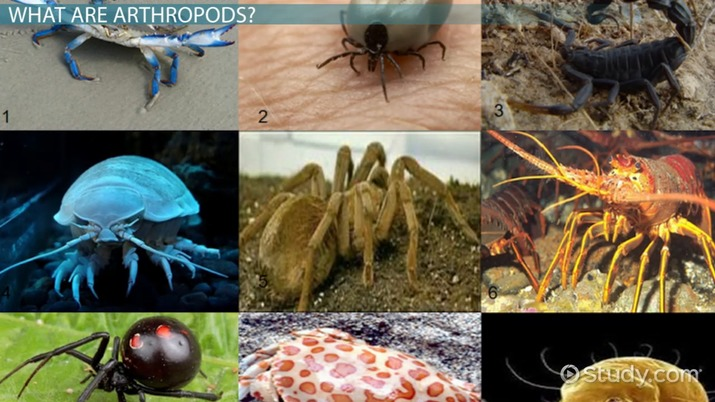

ARTHROPODS(INSECTS)

An arthropod is an invertebrate animal having an exoskeleton, a segmented body, and paired jointed appendages.
Arthropods form the phylum Euarthropoda, which includes insects, arachnids, myriapods, and crustaceans.
Arthropods are distinguished by their jointed limbs and cuticle made of chitin, often mineralised with calcium carbonate.
The arthropod body plan consists of segments, each with a pair of appendages. The rigid cuticle inhibits growth, so arthropods replace it periodically by moulting.
Arthropods are bilaterally symmetrical and their body possesses an external skeleton. Some species have wings.
Their versatility has enabled arthropods to become the most species-rich members of all ecological guilds in most environments.
They have over a million described species, making up more than 80 percent of all described living animal species, some of which, unlike most other animals, are very successful in dry environments.
Arthropods range in size from the microscopic crustacean Stygotantulus up to the Japanese spider crab.
Top
Home